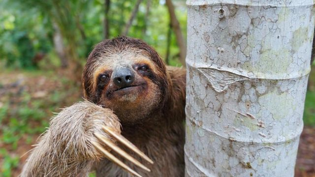

El perezoso es un mamífero placentario perteneciente al orden Pilosa, caracterizado por la lentitud de los movimientos que realiza al desplazarse. Puede pasar la mayor parte del tiempo colgado de las ramas, con la cabeza hacia abajo. Se conoce también como pereza. Habitan las selvas tropicales primarias y secundarias de Sudamérica y de América Central. Su nombre es atribuido a la lentitud de sus movimientos, que se deben al bajo nivel metabólico de su organismo. Su cuerpo está adaptado a tener conductas orientadas al ahorro de energía. Son animales solitarios y tímidos, aunque las hembras pueden ocasionalmente formar grupos. Son más activos en horas nocturnas, durmiendo durante el día. El perezoso puede dormir entre 9 y 15 horas diarias, colgado de una rama. Los perezosos se dividen en dos grandes grupos, los que tienen dos dedos y los que tienen tres.
✓ Tamaño :
Puede variar según la especie. Pueden llegar a medir entre 60 y 80 centímetros y pesar aproximadamente de 3,6 a 7,7 kils. La especie de dos dedos suele ser un poco más grande.
✓ Dientes :
Los perezosos no tienen dientes temporales o deciduos, sino un conjunto de dientes de raíz abierta y corona alta que crecen de manera continua. Carecen de incisivos y no existe ninguna diferencia notable entre premolares y molares.
Algunas especies tienen dientes caniniformes, separados del resto de los dientes por un espacio (diastema). La dentadura del perezoso no está recubierta de ningún tipo de esmalte. Cuando erupcionan de la mandíbula, no tienen cúspide o cuenca, que presentan los dientes del resto de los mamíferos.
El perezoso de tres dedos tiene unos dientes muy débiles, sin esmalte y de cemento, lo que hace que el color de estos sea oscuro.
✓ Extremidades :
Sus extremidades están adaptadas para colgarse de las ramas y agarrarlas. La masa muscular del perezoso conforma el 30% de su peso (en el resto de los mamíferos es el 40%).
Sus patas delanteras y traseras tienen largas garras, cuya forma curva les facilita colgarse de las ramas del árbol sin realizar mucho esfuerzo.
En ambas especies de perezosos las extremidades traseras tienen 3 garras, la diferencia radica en las delanteras.
En el perezoso de tres dedos tienen 3 garras y en el de dos dedos tienen 2. Las extremidades frontales de los perezosos de tres dedos son casi el 50% más largas que las traseras.
✓ Sentidos :
Los perezosos pueden ver los objetos a color, aunque su agudeza visual es pobre; también tienen una muy mala audición. Los sentidos más desarrollados son olfato y tacto, que utilizan para encontrar su alimento.
✓ Locomoción :
Las especies pertenecientes al suborden Folivora se mueven muy lentamente y solo si es necesario. La velocidad promedio es de 4 metros por minuto, pudiendo ir más rápido, a 4,5 metros por minuto, si se encuentran en peligro.
Una de las razones de su lento caminar son las enormes y fuertes garras de sus patas. También podría influir el tamaño de sus extremidades, las anteriores son más largas que las posteriores.
Pero son excelentes nadadores, llegando a alcanzar velocidades de 13,5 metros por minuto. Para lograr esto utilizan sus largas extremidades anteriores como su fueran remos, y así cruzan ríos lentos o nadan entre islotes.
✓ Heterotermia :
En los perezosos la temperatura corporal podría variar según lo haga el entorno. Si el hábitat se torna más cálido, también lo hará su temperatura interna.
Aunque la heterotermia hace que sean sensibles a los cambios externos de temperatura, su piel gruesa funciona como aislante ante dichas variaciones.
Además, normalmente tienen temperaturas bajas: cuando están activos puede ser de 30 a 34° C y cuando están descansando pudiera llegar hasta los 20°, pudiendo inducir un estado de sopor.
✓ Pelaje :
El pelaje del perezoso es de características muy particulares. Cada cabello tiene un surco con un alto grado de humedad. De esta manera se crea el ambiente propicio para que proliferen algas verdes y hongos, estableciéndose entre ellos y el perezoso una relación simbiótica.
Gracias a estos el pelo del animal toma una coloración verdosa, lo que le facilita pasar desapercibido en el bosque donde habita. De esta manera, al camuflarse con el ambiente, es difícil ser visualizado por los jaguares, ocelotes o águilas, que son sus depredadores naturales.
Además de las algas y hongos, el pelo del perezoso alberga un gran grupo de pequeños invertebrados, pudiendo tener hasta 950 polillas y escarabajos en sus pelos. Otros animales que podrían habitar en el pelaje son moscas, mosquitos, piojos y ácaros, todo un ecosistema.
A los perezosos los podemos hallar en las capas aéreas de los bosques primarios y secundarios. En donde prefieren las zonas en las cuales abunden las plantas pertenecientes a las familias Cecropiaceae y Moraceae. Es por ello que han hecho de los bosques nublados de América Central y del Sur sus hábitats de preferencia. De igual manera puede hallarse en distintos ambientes, incluyendo las selvas siempre verdes. Son animales muy solitarios, se alimentan no solo en las horas diurnas sino también en las nocturnas. De muchas variedades de hojas de árboles.
Son del grupo de folívoros, consistiendo su plan alimenticio en brotes tiernos, yemas y hojas de distintos árboles, lo que come también el saltamontes. Sin embargo, tiene por preferencia el género de árboles Cecropia. Se ha logrado visualizar que algunos perezosos han logrado consumir algunos insectos, reptiles pequeños y algunos tipos de aves pequeñas. Con el fin de complementar su dieta. Aunque de preferencia los encontramos en las ramas de los árboles, trasladándose de forma muy lenta entre estos. Siendo sus hojas el principal alimento, la digestión de estos animales es muy lenta. Sus estómagos poseen microrganismos capaces de descomponer las hojas más duras, sin embargo su acción es muy lenta. La digestión puede tardar un mes o más tiempo para ultimarse.
El período de reproducción de estos animales se da solamente una vez al año, en donde se puede tener solo una cría por vez. Las crías al momento del nacimiento son en extremo vulnerables, por lo que pasarán largo tiempo abrazadas a su madre. Al cumplir los 8 meses de vida es que logran separarse y andar de forma independiente. Las hembras pueden encontrarse en condiciones de procrear crías luego de pasados los tres años de edad. En el caso de los machos deben esperar a cumplir los cinco años. En promedio el período de gestación puede durar 11 meses, aunque algunos podrían tardar un poco más. Estos herbívoros cumplen una función ecológica primordial en el mundo, al realizar sus actividades de defecación. Estos ejemplares bajan a las bases de los arboles a orinar y defecar, las cuales depositan en huecos superficiales. Al cubrirlas con hojas, de alguna manera están devolviendo al árbol los nutrientes que consumieron de estos. Es una acción que pone en peligro sus vidas, sin embargo, son necesarias para mantener su alimentación asegurada. Ya que al defecar desde lo alto del árbol seguramente estas se esparcirían y serían arrastradas en las lluvias torrenciales. Las cuales son características de estas zonas boscosas o selváticas.
Entre sus principales depredadores se encuentran las serpientes constrictoras, los pumas, los jaguares, y en algunas ocasiones el águila. Son sus garras los que le permiten a este ejemplar defenderse del ataque de estos animales. Las cuales pueden resultar altamente peligrosas, en donde el atacante podría convertirse en la víctima. En caso de necesitar cruzar un río, son expertos nadadores, ya que logran hacerlo con mucha facilidad. A pesar de ello, son mucho más lentos entre las ramas, lo que puede ser una desventaja ante sus atacantes.